Amortized Inference for Inverse Kinematics#
The preceding section developed amortized inference for models with global and local latent variables. This example isolates the amortization mechanism in a single inverse problem: an inference network maps a noisy end-effector observation to an approximate posterior over joint configurations. There is no population layer in this example; it is the base case that the hierarchical construction extends to related systems. The example follows Section 3.4 of Karumuri and Bilionis (2024).
Forward model and observations#
The forward kinematic model maps the joint configuration \(\boldsymbol{\xi} = (\xi_1, \xi_2, \xi_3, \xi_4)^T\) (slider height \(\xi_1\) and three joint angles \(\xi_2, \xi_3, \xi_4\)) to the end-effector’s 2D position:
where arm lengths \(l_1 = 0.5\), \(l_2 = 0.5\), and \(l_3 = 1.0\). We observe a noisy version of the end-effector position, contaminated with a Gaussian distribution as:
where \(\gamma^2 = 1 \times 10^{-4}\) is the observation noise variance (assumed to be known).
{kind=link}
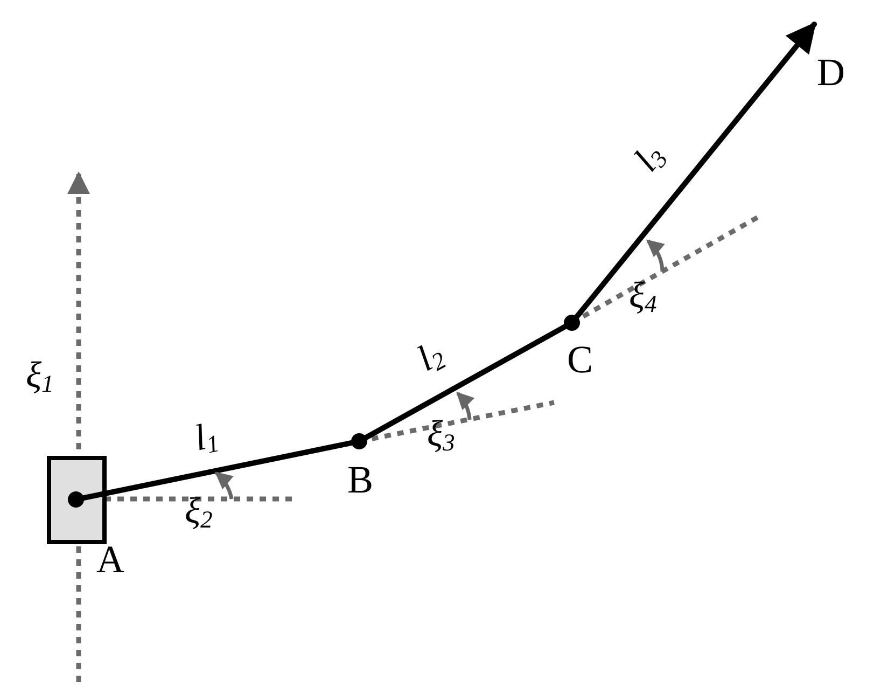
Fig. 25 The slider and three revolute joints define the four-component configuration \(\boldsymbol{\xi}\). Adapted, cropped, and restyled from Figure 18(a) of Karumuri and Bilionis (2024) under CC BY 4.0.#
# System constants
xi_dim = 4
y_dim = 2
noise_scale = jnp.array([0.01, 0.01])
lens = jnp.array([0.5, 0.5, 1.0]) # lengths of the kinematic links
Prior#
To set up our inference, we assume a Gaussian prior for our parameters:
# Prior distribution
prior_loc = jnp.zeros(xi_dim)
prior_scale = jnp.array([0.25, 0.5, 0.5, 0.5])
prior_xi_dist = {'loc': prior_loc, 'scale': prior_scale}
def sample_prior(prior_xi_dist, key, n, xi_dim):
"""Sample from the prior distribution."""
# Handle both tuples (from static fields) and arrays
prior_loc = jnp.array(prior_xi_dist['loc'])[:xi_dim]
prior_scale = jnp.array(prior_xi_dist['scale'])[:xi_dim]
return prior_loc[None, :] + prior_scale[None, :] * jr.normal(key, (n, xi_dim))
Let’s see how the trajectories reconstructed by this prior look like.
# Plot of reconstructed trajectories by the prior
n_samples = 5000 # number of reconstructed samples
Prior_data = sample_prior(prior_xi_dist, key, n_samples, xi_dim)
plot_prior(Prior_data, lens)
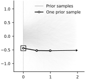
In Amortized Variational Inference (AVI), we use these samples from the prior as our training data. They allow us to learn the map from observed data to the corresponding posterior distribution, which is called the inference function.
Gaussian guide#
For our guide, we use a full-rank multivariate Gaussian, \(q_{\phi}(\boldsymbol{\xi}\mid\mathbf{y})=\mathcal{N}(\boldsymbol{\xi}\mid\boldsymbol{\mu}_\phi(\mathbf{y}),\boldsymbol{\Sigma}_\phi(\mathbf{y}))\). To ensure that \(\boldsymbol{\Sigma}_\phi\) is positive definite, the network produces a lower-triangular Cholesky factor \(\mathbf{L}_\phi\) and sets \(\boldsymbol{\Sigma}_\phi=\mathbf{L}_\phi\mathbf{L}_\phi^\top\). See the variational-inference foundations for details.
def unpack_cholesky(L_diag, L_offdiag, xi_dim):
"""
Constructs Cholesky L matrix from diagonal and off-diagonal elements.
Args:
L_diag: Diagonal elements (xi_dim,)
L_offdiag: Off-diagonal elements (xi_dim*(xi_dim-1)/2,)
xi_dim: Dimension of the latent space
Returns:
Lower triangular Cholesky matrix (xi_dim, xi_dim)
"""
chol_diag = jnp.diag(L_diag)
chol_offdiag = jnp.zeros((xi_dim, xi_dim))
tril_indices = jnp.tril_indices(xi_dim, k=-1)
chol_offdiag = chol_offdiag.at[tril_indices].set(L_offdiag)
q_L = chol_diag + chol_offdiag
return q_L
Inference network#
We approximate the inference function—the map from an observation \(\mathbf{y}\) to the posterior parameters \((\boldsymbol{\mu}_\phi(\mathbf{y}),\mathbf{L}_\phi(\mathbf{y}))\)—with a neural network:
class Amortized_VI(eqx.Module):
"""
Amortized Variational Inference network for Bayesian inverse problems.
Args:
key: Random key for network initialization
xi_dim: Dimension of latent variable ξ
y_dim: Dimension of observation y
prior_xi_dist: Prior distribution dict with keys "loc" and "scale"
f: Forward model function
noise_scale: Observation noise std
Attributes:
mu: Network outputting posterior mean μ(y)
L_diag: Network outputting diagonal of Cholesky factor L
L_offdiag: Network outputting off-diagonal elements of Cholesky factor L
"""
xi_dim: int = eqx.field(static=True)
y_dim: int = eqx.field(static=True)
prior_xi_dist: dict
f: callable = eqx.field(static=True)
noise_scale: Tuple[float, ...]
mu: eqx.nn.Sequential
L_diag: eqx.nn.Sequential
L_offdiag: eqx.nn.Sequential
def __init__(self, key, xi_dim=4, y_dim=2,
prior_xi_dist=None, f=forward_process, noise_scale=None):
"""
Initialize the amortized VI network.
Creates three separate neural networks for mu, L_diag, and L_offdiag
"""
keys = jr.split(key, 9)
self.xi_dim = xi_dim
self.y_dim = y_dim
self.f = f
self.noise_scale = tuple(np.array(noise_scale))
self.prior_xi_dist = {
"loc": np.asarray(prior_xi_dist["loc"], dtype=float),
"scale": np.asarray(prior_xi_dist["scale"], dtype=float),
}
self.mu = eqx.nn.Sequential([
eqx.nn.Linear(self.y_dim, 20, key=keys[0]),
eqx.nn.Lambda(jax.nn.relu),
eqx.nn.Linear(20, 10, key=keys[1]),
eqx.nn.Lambda(jax.nn.relu),
eqx.nn.Linear(10, self.xi_dim, key=keys[2])
])
self.L_diag = eqx.nn.Sequential([
eqx.nn.Linear(self.y_dim, 20, key=keys[3]),
eqx.nn.Lambda(jax.nn.relu),
eqx.nn.Linear(20, 10, key=keys[4]),
eqx.nn.Lambda(jax.nn.relu),
eqx.nn.Linear(10, self.xi_dim, key=keys[5]),
eqx.nn.Lambda(lambda x: jax.nn.softplus(x) + 1e-6) # Ensure positiveness
])
n_offdiag = int(self.xi_dim * (self.xi_dim - 1) / 2)
self.L_offdiag = eqx.nn.Sequential([
eqx.nn.Linear(self.y_dim, 20, key=keys[6]),
eqx.nn.Lambda(jax.nn.relu),
eqx.nn.Linear(20, 10, key=keys[7]),
eqx.nn.Lambda(jax.nn.relu),
eqx.nn.Linear(10, n_offdiag, key=keys[8]),
])
def observed_data(self, key, n=30):
"""
Generate synthetic training data by sampling from prior and adding noise.
"""
key1, key2 = jr.split(key, 2)
# Sample joint configurations from prior
xi_data = sample_prior(self.prior_xi_dist, key1, n, self.xi_dim)
# Generate noisy observations from the prior sample
y_true = self.f(xi_data)['D']
noise = jnp.array(self.noise_scale) * jr.normal(key2, y_true.shape)
y_data = y_true + noise
return xi_data, y_data
def forward(self, key, num_particles=2, num_training_obs=32):
"""
Compute ELBO over all the training observations.
"""
key1, key2 = jr.split(key, 2)
# Generate batch of training data
_, y = self.observed_data(key1, n=num_training_obs)
# Infer posterior parameters for all observations in batch
q_mu = jax.vmap(self.mu)(y)
q_L_diag = jax.vmap(self.L_diag)(y)
q_L_offdiag = jax.vmap(self.L_offdiag)(y)
# Construct full Cholesky matrices L for each observation
q_L_all = jax.vmap(unpack_cholesky, in_axes=(0, 0, None))(
q_L_diag, q_L_offdiag, self.xi_dim
)
def compute_elbo_for_data_point(q_mu_j, q_Lj, y_j, key_j):
"""
Compute ELBO for a single data point y_j.
"""
# Sample standard normal variables for reparameterization trick
particle_keys = jr.split(key_j, num_particles)
zs = jax.vmap(lambda k: jr.normal(k, (self.xi_dim,)))(particle_keys)
# Reparameterization trick
xi_samples = q_mu_j[None, :] + zs @ q_Lj.T
# Compute log prior
prior_loc = self.prior_xi_dist['loc'][:self.xi_dim]
prior_scale = self.prior_xi_dist['scale'][:self.xi_dim]
log_prior = jnp.sum(
stats.norm.logpdf(xi_samples, loc=prior_loc, scale=prior_scale),
axis=1
)
# Compute log likelihood
y_pred = self.f(xi_samples)['D']
log_likelihood = jnp.sum(
stats.norm.logpdf(
y_j[None, :],
loc=y_pred,
scale=jnp.array(self.noise_scale)
),
axis=1)
# Average over Monte Carlo samples
datafit = jnp.mean(log_prior + log_likelihood)
# Entropy term: 0.5 * log(det(2*pi*e*L@L.T))
diag_Lj = jnp.diag(q_Lj)
log_det = 2.0 * jnp.sum(jnp.log(jnp.maximum(diag_Lj, 1e-9)))
entropy = 0.5 * (self.xi_dim * (1.0 + jnp.log(2.0 * jnp.pi)) + log_det)
return datafit + entropy
# Compute ELBO for each observation in the batch
n_obs = y.shape[0]
data_keys = jr.split(key2, n_obs)
elbos = jax.vmap(compute_elbo_for_data_point)(
q_mu, q_L_all, y, data_keys
)
# Return mean ELBO over batch
return jnp.mean(elbos)
def __call__(self, key, num_particles=2, num_training_obs=30):
return self.forward(key,
num_particles=num_particles,
num_training_obs=num_training_obs)
init_key, train_key = jr.split(key, 2)
model = Amortized_VI(
key=init_key,
xi_dim=xi_dim,
y_dim=y_dim,
prior_xi_dist=prior_xi_dist,
f=forward_process,
noise_scale=noise_scale,
)
To train the amortized VI model, we need to define the loss function and the optimizer settings. We do that as follows:
def train_amortized_vi(model, key, n_steps=10000, num_particles=5):
"""
Train the amortized variational inference model.
Args:
model: Amortized_VI instance
key: Random key
n_steps: Number of training steps
num_particles: Number of Monte Carlo samples for ELBO estimation
Returns:
model: Trained Amortized_VI instance.
history: Dictionary containing training history with keys:
- 'steps': List of step numbers
- 'losses': List of loss values (negative ELBO)
- 'learning_rates': List of learning rates at each step
"""
# Learning rate schedule
learning_rate = optax.piecewise_constant_schedule(
init_value=0.01,
boundaries_and_scales={5000: 0.1} # Multiply by 0.1 at step 5000
)
# Initialize Adam optimizer
optim = optax.adam(learning_rate)
@eqx.filter_jit
def compute_loss_and_grads(model, key):
"""
Compute negative ELBO and gradients.
"""
loss, grads = eqx.filter_value_and_grad(
lambda m: -m(key, num_particles=num_particles)
)(model)
return loss, grads
def update_step(model, opt_state, grads):
"""
Apply one optimization step using Adam.
"""
updates, opt_state = optim.update(grads, opt_state)
model = eqx.apply_updates(model, updates)
return model, opt_state
# Initialize optimizer state
init_key, train_key = jr.split(key)
_, initial_grads = compute_loss_and_grads(model, init_key)
# Exclude prior_xi_dist and noise_scale from training (fixed hyperparameters)
initial_grads = eqx.tree_at(lambda x: x.prior_xi_dist, initial_grads, None)
initial_grads = eqx.tree_at(lambda x: x.noise_scale, initial_grads, None)
learnable_grads = eqx.filter(initial_grads, eqx.is_array)
opt_state = optim.init(learnable_grads)
# Initialize training history to track progress
history = {'steps': [], 'losses': [], 'learning_rates': []}
# Main training loop
for step in range(n_steps):
train_key, step_key = jr.split(train_key)
# Compute loss and update
loss, grads = compute_loss_and_grads(model, step_key)
# Exclude prior_xi_dist and noise_scale from training
grads = eqx.tree_at(lambda x: x.prior_xi_dist, grads, None)
grads = eqx.tree_at(lambda x: x.noise_scale, grads, None)
learnable_grads = eqx.filter(grads, eqx.is_array)
model, opt_state = update_step(model, opt_state, learnable_grads)
current_lr = learning_rate(step)
# Record training history
history['steps'].append(step)
history['losses'].append(float(loss))
history['learning_rates'].append(float(current_lr))
# Print
if step % 500 == 0:
print(f'Step {step}: loss = {loss:.2f}, lr = {current_lr:.5f}')
return model, history
Training#
model, history = train_amortized_vi(
model,
train_key,
n_steps=10000,
num_particles=6,
)
Step 0: loss = 19481.05, lr = 0.01000
Step 500: loss = 53.07, lr = 0.01000
Step 1000: loss = 25.33, lr = 0.01000
Step 1500: loss = 13.70, lr = 0.01000
Step 2000: loss = 10.70, lr = 0.01000
Step 2500: loss = 54.06, lr = 0.01000
Step 3000: loss = 8.58, lr = 0.01000
Step 3500: loss = 14.59, lr = 0.01000
Step 4000: loss = 25.03, lr = 0.01000
Step 4500: loss = 16.10, lr = 0.01000
Step 5000: loss = 23.53, lr = 0.00100
Step 5500: loss = 6.37, lr = 0.00100
Step 6000: loss = 7.22, lr = 0.00100
Step 6500: loss = 4.51, lr = 0.00100
Step 7000: loss = 9.18, lr = 0.00100
Step 7500: loss = 21.65, lr = 0.00100
Step 8000: loss = 3.90, lr = 0.00100
Step 8500: loss = 4.21, lr = 0.00100
Step 9000: loss = 4.87, lr = 0.00100
Step 9500: loss = 8.92, lr = 0.00100
Here is the trend of the loss (-ELBO):
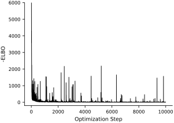
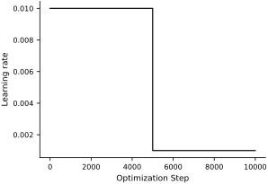
Evaluation#
After training, we want to examine how well our amortized inference network performs the inference on a few target systems with known ground truth for the joint configurations.
Let’s take a look at the AVI posterior distribution and reconstructed configuration for 5 different cases. Note that once the AVI is trained, the inference step runs on-the-fly.
# Evaluation: Test trained model on multiple cases
n_samples = 1000 # Number of posterior samples to draw
postprocess_key = jr.PRNGKey(3)
for j in range(4):
# Generate test case
postprocess_key, data_key = jr.split(postprocess_key)
xi_data, y_data = model.observed_data(data_key, n=1)
# Infer posterior parameters from observation
# From AVI trained inference function
mean = model.mu(y_data[0, :])
L_diag = model.L_diag(y_data[0, :])
L_offdiag = model.L_offdiag(y_data[0, :])
L = unpack_cholesky(L_diag, L_offdiag, model.xi_dim)
# Convert to numpy for printing
xi_data_np = np.array(xi_data[0])
y_data_np = np.array(y_data[0])
print('-' * 60)
print(f"Groundtruth for Case {j+1}:\n xi_data={xi_data_np},\n y_data={y_data_np}")
mean_np = np.array(mean)
cov_np = np.array(L @ L.T)
print('Estimated mean:\n' + str(mean_np))
print('Estimated covariance matrix:\n' + str(cov_np))
# Sample from AVI posterior
postprocess_key, sample_key = jr.split(postprocess_key)
zs = jr.normal(sample_key, (n_samples, model.xi_dim))
xi_samples_AVI = mean[None, :] + zs @ L.T
xi_samples_AVI_np = np.array(xi_samples_AVI)
# Visualize reconstructed trajectories
plot_reconstructed(xi_samples_AVI, xi_data_np[None, :], y_data_np[None, :], lens)
# Sample from prior
postprocess_key, prior_key = jr.split(postprocess_key)
prior_loc = jnp.array(model.prior_xi_dist['loc'])[:model.xi_dim]
prior_scale = jnp.array(model.prior_xi_dist['scale'])[:model.xi_dim]
Prior_data = prior_loc[None, :] + prior_scale[None, :] * jr.normal(
prior_key, (n_samples, model.xi_dim)
)
Prior_data_np = np.array(Prior_data).T
AVI_data_np = xi_samples_AVI_np.T
# Plot pair
pair_plot(Prior_data_np, AVI_data_np, xi_data_np[None, :])
------------------------------------------------------------
Groundtruth for Case 1:
xi_data=[-0.31714088 0.06949134 -0.19751059 0.15957566],
y_data=[ 1.9888455 -0.31583783]
Estimated mean:
[ 0.00943142 -0.17897418 0.01897797 0.00393981]
Estimated covariance matrix:
[[ 0.00081105 -0.0014369 0.00146741 -0.00013176]
[-0.0014369 0.01359194 -0.01765165 0.00079339]
[ 0.00146741 -0.01765165 0.03655675 -0.02093762]
[-0.00013176 0.00079339 -0.02093762 0.02985677]]
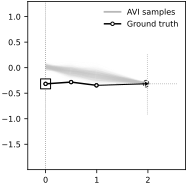
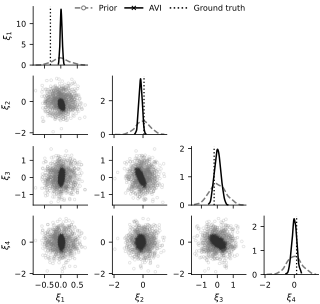
------------------------------------------------------------
Groundtruth for Case 2:
xi_data=[ 0.28787988 -0.2765343 0.01023765 0.16922261],
y_data=[ 1.9452722 -0.07970177]
Estimated mean:
[ 0.2710352 -0.18156719 -0.01947331 0.02582826]
Estimated covariance matrix:
[[ 0.00091945 -0.00019593 0.00262981 -0.00443653]
[-0.00019593 0.01170094 -0.0144376 -0.00147291]
[ 0.00262981 -0.0144376 0.03813522 -0.03063638]
[-0.00443653 -0.00147291 -0.03063638 0.05282469]]
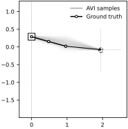
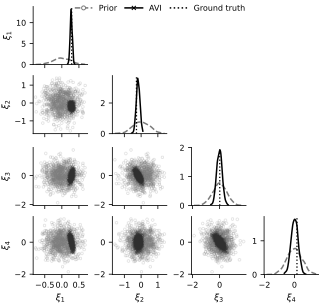
------------------------------------------------------------
Groundtruth for Case 3:
xi_data=[-0.07957558 0.13758607 0.7067975 -0.12045325],
y_data=[1.5913992 1.0126145]
Estimated mean:
[-0.17533267 0.56461465 0.10382407 -0.00205089]
Estimated covariance matrix:
[[ 4.5324501e-04 -1.4604935e-03 1.7383193e-03 -6.1282139e-05]
[-1.4604935e-03 1.4104520e-02 -1.7339895e-02 -7.6780154e-04]
[ 1.7383193e-03 -1.7339895e-02 3.3086482e-02 -1.6549308e-02]
[-6.1282139e-05 -7.6780154e-04 -1.6549308e-02 2.6323372e-02]]
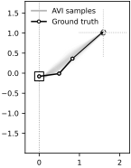
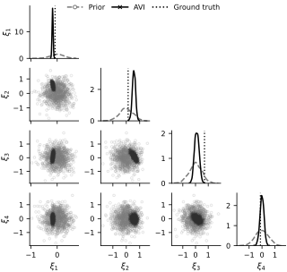
------------------------------------------------------------
Groundtruth for Case 4:
xi_data=[-0.03204953 -0.75268656 -0.30555534 -0.3003993 ],
y_data=[ 0.8258672 -1.7728025]
Estimated mean:
[ 2.4404883e-02 -9.5716357e-01 -2.3901221e-01 2.9613636e-04]
Estimated covariance matrix:
[[ 0.00029874 -0.00137885 0.00144549 0.00042993]
[-0.00137885 0.01493861 -0.01644706 -0.00434939]
[ 0.00144549 -0.01644706 0.02926843 -0.01195675]
[ 0.00042993 -0.00434939 -0.01195675 0.02647991]]
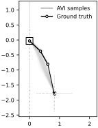
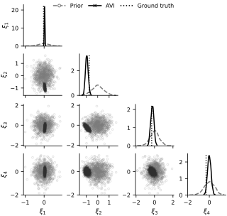
The trained AVI approximation works well for some configurations, but for others it does not cover the true trajectory. The inverse kinematics problem is non-identifiable because different joint configurations can produce the same end-effector position, while reverse-KL variational inference tends to concentrate on one mode and can underestimate posterior uncertainty. The discrepancy may therefore reflect an approximation gap, because the Gaussian guide family is too restrictive, or an amortization gap, because the inference network does not return the best Gaussian for a given observation. As an exercise, increase the network depth or width and compare the result with separately optimized variational inference in the same Gaussian family; this separates network expressiveness from guide-family limitations.